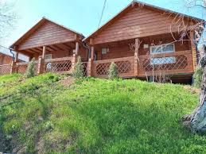
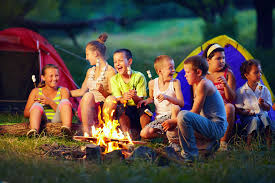

Дитячий табір ЛІСОВА ЗАСТАВА
Розташування та інфраструктура
«Лісова застава» знаходиться на території лісового масиву в одному з наймальовничіших куточків Вишгородського району, неподалік від селища Димер, за 45 км від Києва. Вікові сосни, прекрасна природа і свіже повітря створюють чудові умови для оздоровлення та відпочинку.
Інфраструктура табору включає:
- 2 стаціонарних одноповерхові корпуси з опаленням;
- 5 літніх дерев’яні будиночків-котеджей;
- простору їдальню з сучасним обіднім залом і відкритою літньою верандою;
- медичний кабінет з новітнім обладнанням і лікарняну палату;
- кіноконцертний зал під відкритим небом з естрадою і професійним освітленням;
- спортивний і диско-зал із сучасним обладнанням;
- універсальне поле зі штучним покриттям, яке трансформується для футболу, волейболу, баскетболу, ігровий дитячий, тренажерний та спортивний майданчики, територію для лазер-тега, занять з ІППО-терапії та їзди верхи, мотузковий екстрим-парк, зону із гамаками для занять аеро-йогою, територію для багаття і барбекю-зону;
- дерев’яні альтанки для занять і відпочинку;
- вело і пішохідні доріжки.
Турбота про дітей 24 / 7
Ми розуміємо, що здоров’я, настрій і енергійність дітей залежать від харчування. Тому їжа в таборі готується відповідно до стандартів дитячого раціону. У таборі високий рівень безпеки: віддаленість від індустріальних центрів і населених пунктів, власна артезіанська свердловина, автономне електропостачання, територія огороджена, обладнана системою відеоспостереження і цілодобово охороняється. Навіть батьки, без попередження і узгодження з адміністрацією табору, не зможуть потрапити на територію. Незважаючи на те, що ми довіряємо нашим юним клієнтам, дорослі ночують з дітьми в одному корпусі. Таким чином вони забезпечують Ваш спокій навіть вночі. У таборі цілодобово знаходиться медпрацівник. Медичний кабінет оснащений новітнім обладнанням. Куратори загонів також проходять курс надання першої допомоги. У таборі є чергова машина, а найближча лікарня знаходиться за 7 км. Усі діти на час перебування в таборі застраховані, страховка входить у вартість путівки. За кожною командою (15-20 дітей) закріплені куратор, інструктор і психолог. Ми ретельно добираємо персонал і знаходимо людей, сповнених ентузіазму, терпіння і унікальних навичок, необхідних для створення незабутнього відпочинку дітей. Відсутність зв’язку з дітьми протягом дня виправдана насиченою програмою. Телефонний дзвінки батькам відбуваються з 17:30 до 18:00 години. Батьки зможуть тримати руку на пульсі табору завдяки щоденним фото і відео-звітам на сайті і сторінках табору в соц-мережах. Так само можуть зателефонувати кураторам а, якщо виникне потреба, поспілкуватися з медиком і психологом.
 До вартості путівки ВХОДИТЬ:
- трансфер комфортабельним автобусом
- проживання
- 6-разове харчування
- супровід представником
- спортивно-оздоровчі заходи
- розважально-розвиваючі заходи
- арт-матеріали і спортивний інвентар
- страхування
- гарний настрій та багато розваг